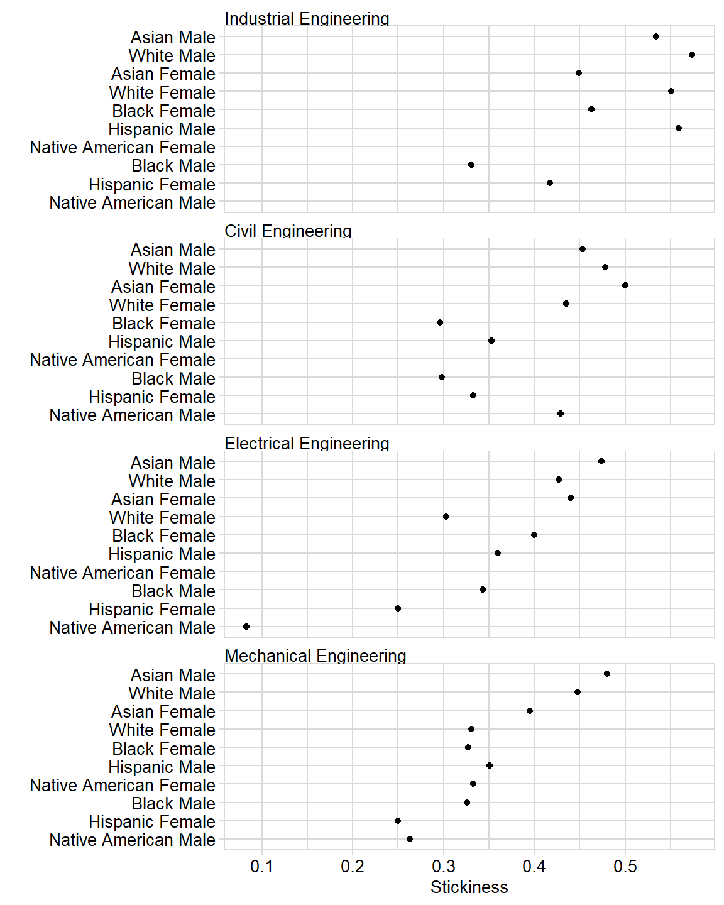

In this vignette, we demonstrate computing the “stickiness” persistence metric using Civil, Electrical, Industrial, and Mechanical Engineering as our example programs.
Longitudinal “stickiness” is the ratio of the number of students graduating in a program to the number of students ever enrolled in that program (Ohland et al. 2012).
The stickiness metric accounts for all students in a program. Unlike the graduation rate metric, stickiness includes students who begin college part-time, who enroll mid-year, and who switch majors or transfer between institutions.
Every student counted in a program’s stickiness metric was enrolled in that program for at least one term. The program succeeded in attracting these students—stickiness tells us how well the program succeeded in retaining them.
The workflow is:
# packages used library("midfieldr") library("midfielddata") library("dplyr") library("stringr") library("ggplot2") library("seplyr")
The Selecting groups of programs vignette describes the process for obtaining the program codes and names for four engineering programs: Civil, Electrical, Industrial, and Mechanical. The output of that vignette is saved as a midfieldr case data set, case_program_group. You may
The case data are loaded with midfieldr. Simply assign the data to an object such as program_group.
# CIP information saved from an earlier vignette program_group <- case_program_group
Examine the result: there are a total of 12 CIP codes for these programs. We have two columns from the cip dataset and the program column we added using cip6_select().
# check the result print(program_group) #> # A tibble: 12 x 3 #> cip6 cip6name program #> <chr> <chr> <chr> #> 1 140801 Civil Engineering, General Civil Engineering #> 2 140802 Geotechnical Engineering Civil Engineering #> 3 140803 Structural Engineering Civil Engineering #> 4 140804 Transportation and Highway Engineering Civil Engineering #> 5 140805 Water Resources Engineering Civil Engineering #> 6 140899 Civil Engineering, Other Civil Engineering #> 7 141001 Electrical, Electronics and Communications Enginee~ Electrical Engine~ #> 8 141003 Laser and Optical Engineering Electrical Engine~ #> 9 141004 Telecommunications Engineering Electrical Engine~ #> 10 141099 Electrical, Electronics and Communications Enginee~ Electrical Engine~ #> 11 141901 Mechanical Engineering Mechanical Engine~ #> 12 143501 Industrial Engineering Industrial Engine~
As part of the problem setup, we define a vector of variable names that will be used later for grouping, summarizing, and joining. grouping_variables is used by
group_summarize() from seplyrleft_join() from dplyr# variable names for grouping, summarizing, and joining grouping_variables <- c("program", "race", "sex")
We use ever_filter() to collect all students ever enrolled in the programs we are studying. ever_filter() has two required arguments:
data data frame of term information, default midfieldterms
codes atomic character vector of 6-digit CIP codesThe codes argument in this case is an atomic vector of the 6-digit CIP codes in our program_group. The function uses these codes to search midfieldterms, the default reference data set. Use print() to check the result.
# extract the 6-digit CIPs as a search series program_series <- program_group[["cip6"]] %>% unique() %>% sort() %>% print() #> [1] "140801" "140802" "140803" "140804" "140805" "140899" "141001" "141003" #> [9] "141004" "141099" "141901" "143501"
Extract all students from midfieldterms ever enrolled in these programs.
students <- ever_filter(data = midfieldterms, codes = program_series) %>% print() #> # A tibble: 10,764 x 2 #> id cip6 #> <chr> <chr> #> 1 MID25783178 143501 #> 2 MID25783197 140801 #> 3 MID25783388 141901 #> 4 MID25783441 140801 #> 5 MID25783491 141001 #> 6 MID25783553 140801 #> 7 MID25783606 141001 #> 8 MID25783648 140801 #> 9 MID25783912 143501 #> 10 MID25784022 141901 #> 11 MID25784025 141901 #> 12 MID25784056 141901 #> # ... with 10,752 more rows
If one is working strictly with the data sets in midfielddata, then the data argument can be omitted because if data is NULL, its default assignment is midfielddata::midfieldterms. Thus, the following code yields the same result as the one above.
students <- ever_filter(codes = program_series) %>% print() #> # A tibble: 10,764 x 2 #> id cip6 #> <chr> <chr> #> 1 MID25783178 143501 #> 2 MID25783197 140801 #> 3 MID25783388 141901 #> 4 MID25783441 140801 #> 5 MID25783491 141001 #> 6 MID25783553 140801 #> 7 MID25783606 141001 #> 8 MID25783648 140801 #> 9 MID25783912 143501 #> 10 MID25784022 141901 #> 11 MID25784025 141901 #> 12 MID25784056 141901 #> # ... with 10,752 more rows
View the result to check the number of observations and to view the first few values of each variable. We see that we have 10,764 students ever enrolled in these programs.
Open the help page by running
? ever_filter()race_sex_join() accepts any data frame with the MIDFIELD student id variable and joins the student race and sex from the midfieldstudents reference data to these data. If using the default reference data, the demographics argument can be omitted.
students <- race_sex_join(data = students, demographics = midfieldstudents) %>% print() #> # A tibble: 10,764 x 4 #> id cip6 race sex #> <chr> <chr> <chr> <chr> #> 1 MID25783178 143501 Black Male #> 2 MID25783197 140801 White Male #> 3 MID25783388 141901 White Male #> 4 MID25783441 140801 White Male #> 5 MID25783491 141001 White Male #> 6 MID25783553 140801 White Male #> 7 MID25783606 141001 White Male #> 8 MID25783648 140801 White Male #> 9 MID25783912 143501 White Male #> 10 MID25784022 141901 White Male #> 11 MID25784025 141901 Black Male #> 12 MID25784056 141901 White Male #> # ... with 10,752 more rows
If the argument to race_sex_join() already includes a sex or race column, that column (or columns) is returned unchanged. Open the help page by running
? race_sex_join()Next we join our custom program names to the student data. We use left_join() (a dplyr function) to join program_group to students by the 6-digit CIP code.
students <- left_join(students, program_group, by = "cip6") %>% print() #> # A tibble: 10,764 x 6 #> id cip6 race sex cip6name program #> <chr> <chr> <chr> <chr> <chr> <chr> #> 1 MID25783~ 1435~ Black Male Industrial Engineering Industrial Eng~ #> 2 MID25783~ 1408~ White Male Civil Engineering, General Civil Engineer~ #> 3 MID25783~ 1419~ White Male Mechanical Engineering Mechanical Eng~ #> 4 MID25783~ 1408~ White Male Civil Engineering, General Civil Engineer~ #> 5 MID25783~ 1410~ White Male Electrical, Electronics and Comm~ Electrical Eng~ #> 6 MID25783~ 1408~ White Male Civil Engineering, General Civil Engineer~ #> 7 MID25783~ 1410~ White Male Electrical, Electronics and Comm~ Electrical Eng~ #> 8 MID25783~ 1408~ White Male Civil Engineering, General Civil Engineer~ #> 9 MID25783~ 1435~ White Male Industrial Engineering Industrial Eng~ #> 10 MID25784~ 1419~ White Male Mechanical Engineering Mechanical Eng~ #> 11 MID25784~ 1419~ Black Male Mechanical Engineering Mechanical Eng~ #> 12 MID25784~ 1419~ White Male Mechanical Engineering Mechanical Eng~ #> # ... with 10,752 more rows
We use group_summarize() (an seplyr function) to group and count the numbers of students ever enrolled in our programs. All variables in students not used as grouping variables are quietly dropped. The assigned count variable is ever.
# count students ever enrolled in programs ever_enrolled <- group_summarize(students, grouping_variables, "ever" = n()) %>% print() #> # A tibble: 63 x 4 #> program race sex ever #> <chr> <chr> <chr> <int> #> 1 Civil Engineering Asian Female 22 #> 2 Civil Engineering Asian Male 53 #> 3 Civil Engineering Black Female 71 #> 4 Civil Engineering Black Male 131 #> 5 Civil Engineering Hispanic Female 15 #> 6 Civil Engineering Hispanic Male 85 #> 7 Civil Engineering International Female 2 #> 8 Civil Engineering International Male 20 #> 9 Civil Engineering Native American Male 7 #> 10 Civil Engineering Other Female 11 #> 11 Civil Engineering Other Male 29 #> 12 Civil Engineering Unknown Female 2 #> # ... with 51 more rows
grad_filter() extracts a subset of the midfielddegrees data containing the unique students ever graduating from the programs listed in program_series.
The procedure for gathering graduates is nearly identical to the procedure for gathering the ever-enrolled. We use grad_filter() to search the midfielddegrees dataset using the same codes argument; we join race, sex, and program in the same way; and when we count students, the totals are assigned to the new variable grad.
Reminder that in a sequence of operations using the pipe operator (%>%), the outcome of the one operation is assigned to the first argument of the next operation using the dot (.) argument.
# count students graduating from programs graduated <- grad_filter(codes = program_series) %>% race_sex_join() %>% left_join(program_group, by = "cip6") %>% group_summarize(., grouping_variables, "grad" = n()) %>% print() #> # A tibble: 60 x 4 #> program race sex grad #> <chr> <chr> <chr> <int> #> 1 Civil Engineering Asian Female 11 #> 2 Civil Engineering Asian Male 24 #> 3 Civil Engineering Black Female 21 #> 4 Civil Engineering Black Male 39 #> 5 Civil Engineering Hispanic Female 5 #> 6 Civil Engineering Hispanic Male 30 #> 7 Civil Engineering International Female 1 #> 8 Civil Engineering International Male 5 #> 9 Civil Engineering Native American Male 3 #> 10 Civil Engineering Other Female 1 #> 11 Civil Engineering Other Male 8 #> 12 Civil Engineering Unknown Female 1 #> # ... with 48 more rows
Notes.
.) argument can be safely omitted from race_sex_join() and print() because both functions operate on the single data frame object passed by the pipe.group_summarize() from the seplyr package requires explicit arguments, hence the dot placeholder to represent the incoming data frame.graduated <- grad_filter(codes = program_series) %>% race_sex_join(.) %>% left_join(., program_group, by = "cip6") %>% group_summarize(., grouping_variables, "grad" = n()) %>% print(.)
Open the help page by running
? grad_filter()To set up the stickiness calculation, we join graduated to ever_enrolled by program, race, and sex.
stickiness <- left_join(ever_enrolled, graduated, by = grouping_variables) %>% print() #> # A tibble: 63 x 5 #> program race sex ever grad #> <chr> <chr> <chr> <int> <int> #> 1 Civil Engineering Asian Female 22 11 #> 2 Civil Engineering Asian Male 53 24 #> 3 Civil Engineering Black Female 71 21 #> 4 Civil Engineering Black Male 131 39 #> 5 Civil Engineering Hispanic Female 15 5 #> 6 Civil Engineering Hispanic Male 85 30 #> 7 Civil Engineering International Female 2 1 #> 8 Civil Engineering International Male 20 5 #> 9 Civil Engineering Native American Male 7 3 #> 10 Civil Engineering Other Female 11 1 #> 11 Civil Engineering Other Male 29 8 #> 12 Civil Engineering Unknown Female 2 1 #> # ... with 51 more rows
We suggest omitting observations with 5 or fewer students ever enrolled.
stickiness <- filter(stickiness, ever > 5)
Finally, we create stick, the ratio of grad to ever. Stickiness is reported as a fraction between 0 and 1.
# tally stickiness stickiness <- stickiness %>% mutate(stick = round(grad / ever, 3)) %>% print() #> # A tibble: 54 x 6 #> program race sex ever grad stick #> <chr> <chr> <chr> <int> <int> <dbl> #> 1 Civil Engineering Asian Female 22 11 0.5 #> 2 Civil Engineering Asian Male 53 24 0.453 #> 3 Civil Engineering Black Female 71 21 0.296 #> 4 Civil Engineering Black Male 131 39 0.298 #> 5 Civil Engineering Hispanic Female 15 5 0.333 #> 6 Civil Engineering Hispanic Male 85 30 0.353 #> 7 Civil Engineering International Male 20 5 0.25 #> 8 Civil Engineering Native American Male 7 3 0.429 #> 9 Civil Engineering Other Female 11 1 0.091 #> 10 Civil Engineering Other Male 29 8 0.276 #> # ... with 44 more rows
Before structuring the data for graphing, we select the populations we are interested in. For example, we might omit students for whom the “race” designation is ambiguous. This step could have been taken earlier, but must be taken (if at all) before using multiway_order().
We use filter() (a dplyr function) to keep all rows except those in which race is Unknown, International, or Other.
# prepare data for graph stickiness_mw <- stickiness %>% filter(!race %in% c("Unknown", "International", "Other")) %>% filter(!sex %in% "Unknown")
This example has no “Unknown” values in sex, but the larger data set does have a few. For completeness, I’ve also filtered to remove those observations.
We structure the stickiness results as multiway data by combining student race and sex into a single race_sex variable. The Multiway article explains multiway data and graphs in detail.
We use:
mutate() (a dplyr function) to create a new variablestr_c() (a stringr function) to combine the race and sex stringsselect() (a dplyr function) to keep three variables only# create the race_sex variable stickiness_mw <- stickiness_mw %>% mutate(race_sex = str_c(race, sex, sep = " ")) %>% select(program, race_sex, stick) %>% print() #> # A tibble: 36 x 3 #> program race_sex stick #> <chr> <chr> <dbl> #> 1 Civil Engineering Asian Female 0.5 #> 2 Civil Engineering Asian Male 0.453 #> 3 Civil Engineering Black Female 0.296 #> 4 Civil Engineering Black Male 0.298 #> 5 Civil Engineering Hispanic Female 0.333 #> 6 Civil Engineering Hispanic Male 0.353 #> 7 Civil Engineering Native American Male 0.429 #> 8 Civil Engineering White Female 0.435 #> 9 Civil Engineering White Male 0.478 #> 10 Electrical Engineering Asian Female 0.44 #> # ... with 26 more rows
multiway_order() converts the character variables program and race_sex into factors and orders the levels of the two factors by the relevant stickiness medians. glimpse() shows that the two categorical variables are now factors.
# convert the data to a multiway structure stickiness_mw <- multiway_order(stickiness_mw) %>% print() #> # A tibble: 36 x 3 #> program race_sex stick #> <fct> <fct> <dbl> #> 1 Civil Engineering Asian Female 0.5 #> 2 Civil Engineering Asian Male 0.453 #> 3 Civil Engineering Black Female 0.296 #> 4 Civil Engineering Black Male 0.298 #> 5 Civil Engineering Hispanic Female 0.333 #> 6 Civil Engineering Hispanic Male 0.353 #> 7 Civil Engineering Native American Male 0.429 #> 8 Civil Engineering White Female 0.435 #> 9 Civil Engineering White Male 0.478 #> 10 Electrical Engineering Asian Female 0.44 #> # ... with 26 more rows
Open the help page by running
? multiway_order()By using multiway_order() to condition the data, the rows and panels of the multiway graph will be ordered by the appropriate medians. We use conventional ggplot2 functions applied to the stickiness data frame:
stick is the quantitative x-variablerace_sex is the y-variable forming the rows of the panelsprogram in facet_wrap() conditions the panelsas.table = FALSE places the panels in ascending order from bottom to topgeom_point() creates the data markers; any NA values are removed by na.rm = TRUE
labs() assign axis labelsggplot(stickiness_mw, aes(x = stick, y = race_sex)) + facet_wrap(vars(program), ncol = 1, as.table = FALSE) + geom_point(na.rm = TRUE) + labs(x = "Stickiness", y = "") + theme_midfield()

We also apply our own theme_midfield() to edit the visual properties of the graph: axes, legends, panels, strips, etc. Open the help page by running
? theme_midfield()Ohland, Matthew, Marisa Orr, Richard Layton, Susan Lord, and Russell Long. 2012. “Introducing Stickiness as a Versatile Metric of Engineering Persistence.” In Proceedings of the Frontiers in Education Conference, 1–5.
For reference, the complete script for this example is available. We’ve omitted intermediate exploratory steps, retaining the minimum code required to obtain the results graph.
setting value
version R version 4.0.1 (2020-06-06)
os Windows 10 x64
system x86_64, mingw32
ui RTerm
language (EN)
collate English_United States.1252
ctype English_United States.1252
tz America/New_York
date 2020-06-18
package * version date lib source
dplyr * 1.0.0 2020-05-29 [] CRAN (R 4.0.0)
ggplot2 * 3.3.1 2020-05-28 [] CRAN (R 4.0.0)
midfielddata * 0.1.0 2020-06-06 [] local
midfieldr * 1.0.0.9001 2020-06-18 [] local
seplyr * 0.8.8 2020-05-24 [] CRAN (R 4.0.0)
stringr * 1.4.0 2019-02-10 [] CRAN (R 4.0.0)
* dependent packages not listed